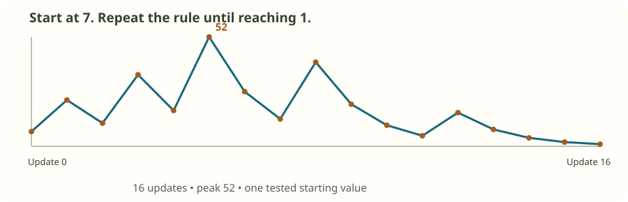
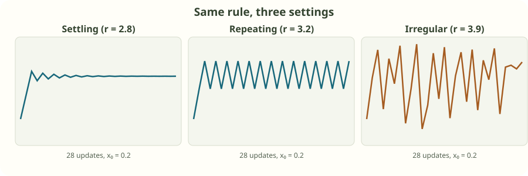

Complexity, Chaos, and Fractals
A short mathematical rule can lead to a difficult calculation, a sensitive prediction, or a pattern with detail at every scale. Three examples will show why these are different ideas.
One rule, applied again and again
By now, recursion is familiar. In Week 5, a temperature or a control setting changed in response to an earlier value. In Week 6, an account balance grew according to a rule. In Week 9, a string of zeros and ones recorded successive choices. In each case, information at one step determined what came next.
The notation \(x_{n+1}=f(x_n)\) means: begin with a number \(x_0\), apply the function \(f\), and use the output as the next input. The process generates a trajectory or orbit, the sequence \(x_0,x_1,x_2,\ldots\).
A familiar example
If \(x_0=5\) and \(x_{n+1}=x_n+3\), the successive values are 5, 8, 11, 14, and so on. The formula produces a new value without our having to invent a new instruction each time. We can also see that after \(n\) updates, \(x_n=5+3n\), so even a large step is easy to calculate.
But not every recursive rule behaves so simply. Sometimes we can perform each update easily while struggling to describe the full sequence. Sometimes a tiny change in the starting value makes a large difference much later. Sometimes the update rule constructs smaller copies of an intricate geometric figure. We'll distinguish those possibilities carefully.
1. A short instruction can require a great deal of work
Suppose you have a list of 16 names and want to find one name. In the worst case, checking one name after another could require 16 checks. If the list is sorted and you repeatedly divide the remaining search in half, four yes-or-no decisions are enough to distinguish 16 possibilities. We saw a related doubling pattern in Week 9's binary trees.
| Number of possibilities | Checks in a one-by-one search (worst case) | Binary choices needed in a balanced search |
|---|---|---|
| 8 | 8 | 3 |
| 16 | 16 | 4 |
| 32 | 32 | 5 |
| 1,024 | 1,024 | 10 |
The second method needs fewer decisions because one decision can eliminate many possibilities. But a balanced search requires usable structure, such as sorted data. Without that structure, we cannot simply assume the faster method works.
The number of bits needed to write an input is one possible way to measure its size. A large number and a long list are different kinds of input, but in either case we should say what counts as one step before comparing algorithms.
Check your understanding. A balanced search distinguishes 64 possibilities by asking questions that divide the remaining possibilities in half. How many questions are sufficient?
See an explanation
Six: (2^6=64). This is a statement about a balanced search with suitable information, not a guarantee for an unsorted list.
2. The Collatz problem: easy steps, difficult questions
Begin with a positive whole number. If it is even, divide it by two. If it is odd, multiply it by three and add one. Use the result as the next number and repeat. This is the Collatz rule.
Starting at 6, we can write every value without a calculator:
6 → 3 → 10 → 5 → 16 → 8 → 4 → 2 → 1
Count the arrows, not just the numbers. This route takes eight updates before reaching 1. Its largest value is 16, which is called the peak. These are different measurements: how long the calculation runs and how high its values climb.
Now try 7. Although 7 is only one larger than 6, its route takes sixteen updates and reaches a peak of 52. The difference in the starting numbers does not translate into a simple difference in their stopping times.
If a starting value \(n\) reaches 1, let \(\tau(n)\) be the number of updates before its first arrival at 1. We have found \(\tau(6)=8\) and \(\tau(7)=16\).

Count two different things
For a start of 10, the route is 10 → 5 → 16 → 8 → 4 → 2 → 1. There are seven displayed numbers but only six updates, and the peak is 16. Students sometimes report the number of listed values as the number of steps; checking the arrows prevents that mistake.
The Collatz conjecture says that every positive integer eventually reaches 1. Huge numbers of starting values have been checked by computation, but the claim for every positive integer remains unproved. Checking a million starts, for instance, establishes something about those million starts—not the infinitely many others. Further mathematical background describes what is known about large classes of Collatz orbits.
There are two distinct questions here. For a given start, how many steps does our program take before reaching 1? And can we prove that it reaches 1 for every positive integer? The first is an experiment we can perform for particular inputs. The second asks for a general mathematical argument. A simple program does not automatically supply one.
Collatz is useful for a lesson about complexity because the updates are straightforward to compute, yet the stopping times vary sharply and the universal statement is hard to establish. This does not prove that Collatz belongs to a particular formal computational-complexity class. Nor is its uneven behavior by itself evidence of chaos.
Check your understanding. Starting at 10, what is ( au(10))? How is that different from the peak?
See an explanation
It takes 6 updates to reach 1, so ( au(10)=6). The peak is 16, the largest value visited. One measures the number of operations; the other measures the size of a value.
3. Completely determined does not always mean predictable far ahead
Imagine measuring the current population of a species as a fraction \(x\) of some reference level. A simplified model might let a population grow when it is small, then slow its growth as it becomes crowded. One well-known update rule with that structure is the logistic map:
The parameter \(r\) changes the strength of the update. It is not a simple percentage growth rate. This is a mathematical model of a normalized quantity, not a complete description of any actual wildlife population.
Calculate the first two updates
Let \(r=2.8\) and \(x_0=0.2\). Substitute the current value into both places on the right:
\[x_1=2.8(0.2)(1-0.2)=0.448.\]
Use the new value—not the original 0.2—to find the next step:
\[x_2=2.8(0.448)(1-0.448)=0.6924288.\]
Even though the rule stays the same, the output now depends on the value created by the previous update.
One equation, several possible kinds of behavior
Keep the same initial value \(x_0=0.2\), and change \(r\). At \(r=2.8\), the values settle toward a fixed level. At \(r=3.2\), they approach an alternating two-value pattern. At \(r=3.9\), they vary irregularly for long periods.

| Setting | What the model does | A useful mathematical word |
|---|---|---|
| \(r=2.8\) | Approaches one stable value | Fixed-point attraction |
| \(r=3.2\) | Approaches two alternating values | Period-two cycle |
| \(r=3.9\) | Shows a sustained irregular trajectory | Chaotic regime |
A fixed point is a value unchanged by one update: \(f(x^*)=x^*\). A period-two cycle consists of two different values that alternate under the rule. These are precise patterns, even when the sequence takes time to settle into them.
4. Two starts that differ by one ten-thousandth
To examine chaotic behavior, compare two trajectories using exactly the same rule and parameter but slightly different starts. Set \(r=3.9\) and try \(x_0=0.4000\) and \(y_0=0.4001\). At the first step, the two values are still close: approximately 0.936000 and 0.936078.
Continue each sequence independently. The small initial difference does not have to grow on every single step; at some steps it shrinks. But over enough steps, the two trajectories can separate enough to produce very different forecasts.
The logistic map at \(r=3.9\) provides a familiar example of a chaotic regime. It is still deterministic: identical initial conditions and the same parameter produce exactly the same mathematical sequence. Long-term forecasting becomes difficult when the initial condition cannot be known to unlimited precision.
The distinction matters. A graph that looks irregular could be produced by random noise, complex input, or a deterministic chaotic system. Appearance alone cannot tell us which explanation is correct. Likewise, the irregularity of Collatz stopping times does not establish that Collatz is chaotic.
Check your understanding. Does the logistic formula use chance to decide which update to make? Why can long-term predictions still disagree?
See an explanation
The update rule contains no random choice. The disagreement comes from distinct starting values being repeatedly transformed; under sensitive dynamics, tiny initial differences can become important later.
5. Remove the middle triangle, then repeat
Begin with a solid equilateral triangle. Connect the midpoints of its three sides, dividing it into four smaller congruent triangles. Remove the central upside-down triangle. Three smaller corner triangles remain. Now perform the same operation on each of them.
The Sierpiński triangle is the limiting geometric set obtained by repeating this operation indefinitely. Its shape becomes more intricate as we take more stages, but the rule itself never changes.

Each step gives us three times as many small surviving triangles. If \(N_n\) is the number of remaining triangles at stage \(n\), then
At stages 0, 1, 2, 3, and 4, the counts are 1, 3, 9, 27, and 81. The length of an individual small triangle's side is halved at each stage. At stage 3, each small side has \(1/8\) of the original length.
More pieces, less filled area
Four half-size triangles would together fill the original triangle, because each has one quarter of its parent's area. But we remove one of those four. So the total filled area is multiplied by \(3/4\) each time.
| Stage \(n\) | Small triangles \(3^n\) | Each side's fraction | Filled area fraction \((3/4)^n\) |
|---|---|---|---|
| 0 | 1 | 1 | 1 |
| 1 | 3 | 1/2 | 3/4 |
| 2 | 9 | 1/4 | 9/16 |
| 3 | 27 | 1/8 | 27/64 |
| 4 | 81 | 1/16 | 81/256 |
The number of surviving pieces grows without bound as the construction continues. Meanwhile, the fraction of filled area tends toward zero. Both facts follow from the same replacement rule. Counting pieces and measuring their total area answer different questions.
Check your understanding. A stage-2 Sierpiński drawing has nine remaining triangles and filled area (9/16). What happens at stage 3?
See an explanation
Each of the nine triangles produces three smaller survivors, giving 27. Each retains three quarters of its area, so the total filled fraction becomes ((9/16)(3/4)=27/64).
6. Can something lie between a line and a surface?
For a line segment, doubling the magnification creates two copies of half the size. For a square, doubling the magnification in both directions creates four half-size copies. The Sierpiński triangle produces three half-size copies. Its scaling is between those familiar cases.
| Object | Half-size copies of the whole | Dimension |
|---|---|---|
| Line segment | 2 | 1 |
| Sierpiński triangle | 3 | Approximately 1.585 |
| Filled square | 4 | 2 |
For an exactly self-similar set made from \(N\) non-overlapping copies scaled by \(1/s\), its similarity dimension \(D\) satisfies \(N=s^D\). For the Sierpiński triangle, \(3=2^D\), so
The logarithms are an extension; you do not need to calculate them by hand for the core work. What matters first is the relation between how many copies appear and how much smaller they become. For this ideal construction, the similarity dimension agrees with its fractal (Hausdorff) dimension. Waterloo's mathematical explanation shows the same calculation.
Natural patterns such as coastlines or branching vegetation sometimes show scale-dependent detail, but they are not exact mathematical Sierpiński triangles. Calling something a fractal is a claim about its geometry across scales, not simply a compliment about an intricate picture.
7. What do the examples tell us—and what don't they tell us?
| Example | What we can calculate | What requires more reasoning |
|---|---|---|
| Collatz | The values, number of steps, and peak for a tested starting integer | Whether every positive integer eventually reaches 1 |
| Logistic map | Updates and differences between two chosen trajectories | Long-term prediction from uncertain initial conditions; identifying chaos |
| Sierpiński triangle | Counts and area fractions at finite stages | Describing the infinite-scale limit and its dimension |
The important questions vary with the example. For Collatz, testing many cases cannot substitute for proof of a universal statement. For the logistic map, the formula may be exact while the starting measurement is uncertain. For the Sierpiński triangle, a finite picture is only one stage of a construction defined through infinitely many repetitions.
Complexity, chaos, and fractals can occur together in richer mathematics. Yet none of these words follows automatically from the presence of recursion. A simple savings rule is recursive without being chaotic. A complicated-looking picture is not necessarily fractal. An algorithm may have a short description without having a short running time.
In the Week 10 Explorer, you can investigate all three examples without changing the mathematical questions. The guided lab asks you to produce a short explanation supported by actual computations, and the discussion asks you to distinguish the three concepts for another reader.
References and further work
These sources are optional and expand on the mathematics covered here:
- Terence Tao, Almost all orbits of the Collatz map attain almost bounded values — research on large classes of Collatz trajectories, without proving the full conjecture.
- Robert May, Simple mathematical models with very complicated dynamics — a classic introduction to complicated behavior from simple population rules.
- University of Waterloo, Dynamical Systems and Fractals — the Sierpiński triangle and dimension by self-similarity.